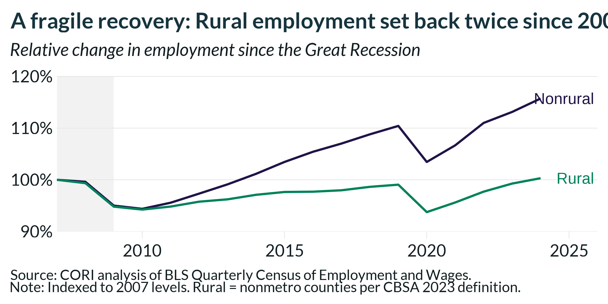
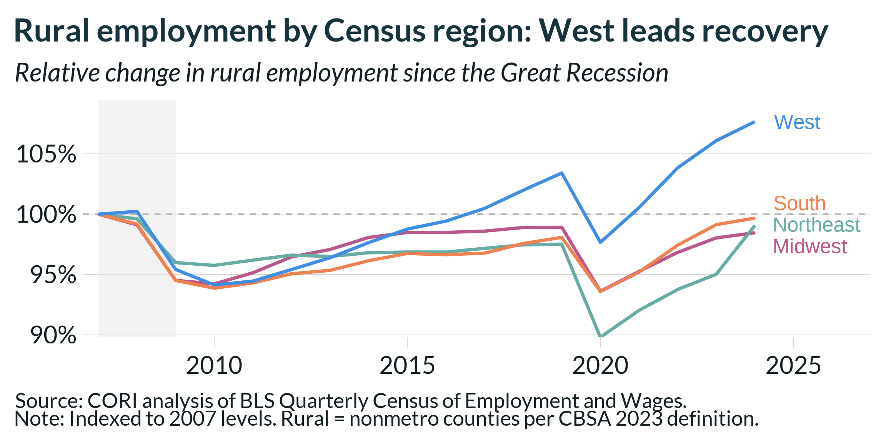
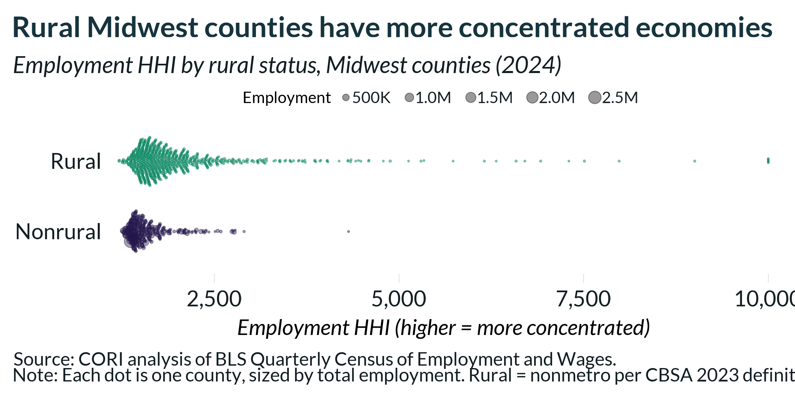

Rural vs. Nonrural Employment Trends
rural-employment-trends.RmdThis vignette shows a common analysis pattern: comparing employment
trends between rural and nonrural counties since the Great Recession
using read_qcew_from_s3(), the
ruraldefinitions package, and cori.charts for
visualization.
library(cori.data.qcew)
library(cori.charts)
library(ruraldefinitions)
library(ggrepel)
library(dplyr)
library(ggplot2)
load_fonts()Rural vs. nonrural employment since the Great Recession
Pull county-level annual employment for all years since 2007:
emp_raw <- read_qcew_from_s3(
variables = "annual_avg_emplvl",
years = 2007:2024
)Keep only 5-digit county geoids and attach the rural/nonrural flag
from ruraldefinitions::cbsa_2023:
emp_co <- emp_raw |>
filter(nchar(geoid) == 5) |>
left_join(
select(cbsa_2023, geoid, is_rural),
by = "geoid"
)Index employment to 2007 levels within each group to show relative change:
chrt_dta <- emp_co |>
filter(!is.na(is_rural)) |>
group_by(is_rural, year) |>
reframe(tot_emp = sum(value)) |>
group_by(is_rural) |>
mutate(
index_value = tot_emp / tot_emp[year == 2007],
year = as.numeric(year)
)Quick stats for the most recent year-over-year change:
latest_yr <- max(chrt_dta$year)
chrt_dta |>
filter(year >= (latest_yr - 1)) |>
arrange(is_rural, year) |>
group_by(is_rural) |>
mutate(pct_change = (tot_emp - lag(tot_emp)) / lag(tot_emp)) |>
filter(year == latest_yr) |>
select(is_rural, pct_change)
#> # A tibble: 2 × 2
#> # Groups: is_rural [2]
#> is_rural pct_change
#> <chr> <dbl>
#> 1 Nonrural 0.0229
#> 2 Rural 0.0105
label_df <- chrt_dta |> filter(year == max(year))
chrt_dta |>
ggplot(aes(x = year, y = index_value, color = is_rural, group = is_rural)) +
annotate("rect", xmin = 2007, xmax = 2009, ymin = .9, ymax = 1.2,
fill = "grey90", alpha = 0.5) +
geom_line(linewidth = 1.5) +
geom_text_repel(
data = label_df,
aes(label = is_rural),
nudge_x = 2,
direction = "y",
hjust = 0,
segment.color = NA,
size = 5
) +
scale_y_continuous(
labels = scales::label_percent(accuracy = 1),
limits = c(.9, 1.2),
expand = expansion(mult = c(0, 0.05))
) +
scale_x_continuous(
expand = expansion(mult = c(0, 0)),
n.breaks = 5,
labels = scales::label_number(accuracy = 1, big.mark = "")
) +
scale_color_manual(
values = c(
"Rural" = cori_palettes$ctg2ruralnonrural[[1]],
"Nonrural" = cori_palettes$ctg2ruralnonrural[[2]]
)
) +
theme_cori() +
theme(
legend.position = "none",
axis.ticks.x = element_line(color = "#d0d2ce", linewidth = .25),
plot.title = element_text(color = cori_colors[["Dark Green"]])
) +
labs(
title = "A fragile recovery: Rural employment set back twice since 2007",
subtitle = "Relative change in employment since the Great Recession",
x = NULL,
y = NULL,
caption = paste0(
"Source: CORI analysis of BLS Quarterly Census of Employment and Wages.\n",
"Note: Indexed to 2007 levels. Rural = nonmetro counties per CBSA 2023 definition."
)
)
Regional breakdown
To see how rural employment trends differ by Census region, attach a region crosswalk and repeat the analysis:
region_xwalk <- tigris::states() |>
sf::st_drop_geometry() |>
select(GEOID, REGION) |>
mutate(
region = case_when(
REGION == "1" ~ "Northeast",
REGION == "2" ~ "Midwest",
REGION == "3" ~ "South",
REGION == "4" ~ "West"
)
)
#> | | | 0% | |= | 1% | |= | 2% | |== | 2% | |== | 3% | |=== | 4% | |=== | 5% | |==== | 5% | |==== | 6% | |===== | 7% | |====== | 8% | |====== | 9% | |======= | 9% | |======= | 10% | |======= | 11% | |======== | 11% | |========= | 13% | |========== | 14% | |========== | 15% | |=========== | 15% | |=========== | 16% | |============ | 17% | |============= | 19% | |============== | 20% | |=============== | 21% | |=============== | 22% | |================ | 22% | |================= | 24% | |================= | 25% | |================== | 26% | |=================== | 27% | |==================== | 28% | |===================== | 30% | |====================== | 31% | |======================= | 33% | |======================== | 34% | |======================== | 35% | |========================= | 35% | |========================= | 36% | |========================== | 37% | |========================== | 38% | |=========================== | 38% | |=========================== | 39% | |============================ | 40% | |============================ | 41% | |============================= | 41% | |============================== | 42% | |=============================== | 44% | |================================ | 45% | |================================ | 46% | |================================= | 47% | |================================== | 48% | |================================== | 49% | |=================================== | 50% | |==================================== | 52% | |===================================== | 53% | |====================================== | 54% | |====================================== | 55% | |======================================= | 55% | |======================================== | 56% | |========================================= | 58% | |========================================== | 60% | |========================================== | 61% | |=========================================== | 61% | |=========================================== | 62% | |============================================ | 63% | |============================================= | 65% | |============================================== | 65% | |=============================================== | 66% | |=============================================== | 67% | |================================================ | 68% | |================================================ | 69% | |================================================= | 69% | |================================================= | 70% | |================================================== | 71% | |=================================================== | 73% | |==================================================== | 74% | |===================================================== | 76% | |====================================================== | 77% | |====================================================== | 78% | |======================================================= | 78% | |======================================================= | 79% | |======================================================== | 80% | |======================================================== | 81% | |========================================================= | 81% | |========================================================= | 82% | |========================================================== | 82% | |========================================================== | 83% | |=========================================================== | 84% | |=========================================================== | 85% | |============================================================ | 86% | |============================================================= | 87% | |============================================================== | 88% | |============================================================== | 89% | |=============================================================== | 90% | |=============================================================== | 91% | |================================================================== | 94% | |=================================================================== | 95% | |=================================================================== | 96% | |==================================================================== | 97% | |======================================================================| 99% | |======================================================================| 100%
regional_rural <- emp_co |>
filter(!is.na(is_rural), is_rural == "Rural") |>
mutate(st_fips = substr(geoid, 1, 2)) |>
left_join(region_xwalk, by = c("st_fips" = "GEOID")) |>
filter(!is.na(region)) |>
group_by(region, year) |>
reframe(tot_emp = sum(value)) |>
group_by(region) |>
mutate(
index_value = tot_emp / tot_emp[year == 2007],
year = as.numeric(year)
)
region_colors <- c(
"West" = cori_palettes$ctg4mid[[1]],
"South" = cori_palettes$ctg4mid[[2]],
"Midwest" = cori_palettes$ctg4mid[[3]],
"Northeast" = cori_palettes$ctg4mid[[4]]
)
label_df <- regional_rural |> filter(year == max(year))
regional_rural |>
ggplot(aes(x = year, y = index_value, color = region)) +
annotate("rect", xmin = 2007, xmax = 2009, ymin = -Inf, ymax = Inf,
fill = "grey90", alpha = 0.5) +
geom_hline(yintercept = 1, color = "grey70", linetype = "dashed") +
geom_line(linewidth = 1.5) +
geom_text_repel(
data = label_df,
aes(label = region),
nudge_x = 0.5,
direction = "y",
hjust = 0,
segment.color = NA,
size = 4.5,
show.legend = FALSE
) +
scale_color_manual(values = region_colors) +
scale_x_continuous(
limits = c(2007, max(regional_rural$year) + 3),
expand = expansion(mult = c(0.02, 0)),
labels = scales::label_number(accuracy = 1, big.mark = "")
) +
scale_y_continuous(
labels = scales::label_percent(accuracy = 1),
expand = expansion(mult = c(0, .1))
) +
theme_cori() +
theme(
legend.position = "none",
axis.ticks.x = element_line(color = "#d0d2ce", linewidth = .25),
plot.title = element_text(color = cori_colors[["Dark Green"]])
) +
labs(
title = "Rural employment by Census region: West leads recovery",
subtitle = "Relative change in rural employment since the Great Recession",
x = NULL,
y = NULL,
caption = paste0(
"Source: CORI analysis of BLS Quarterly Census of Employment and Wages.\n",
"Note: Indexed to 2007 levels. Rural = nonmetro counties per CBSA 2023 definition."
)
)
Industry concentration: HHI swarm plot
The Herfindahl-Hirschman Index (hhi_emp) measures how
concentrated a county’s employment is across industries. Higher values
mean fewer industries dominate local employment — a sign of economic
fragility. Comparing rural and nonrural counties in the Midwest
illustrates how this plays out within a single region.
library(ggbeeswarm)
midwest_fips <- c("17", "18", "19", "20", "26", "27", "29", "31", "38", "39", "46", "55")
qcew <- read_qcew_from_s3(
variables = c("hhi_emp", "annual_avg_emplvl"),
years = 2024
) |>
filter(
nchar(geoid) == 5,
substr(geoid, 1, 2) %in% midwest_fips
)
hhi <- qcew |>
filter(variable == "hhi_emp") |>
select(geoid, hhi = value)
emp <- qcew |>
filter(variable == "annual_avg_emplvl") |>
select(geoid, employment = value)
midwest_co <- hhi |>
left_join(emp, by = "geoid") |>
left_join(select(cbsa_2023, geoid, is_rural), by = "geoid") |>
filter(!is.na(is_rural), !is.na(hhi))
midwest_co |>
ggplot(aes(
x = hhi,
y = is_rural,
size = employment,
color = is_rural
)) +
geom_beeswarm(
cex = 0.6,
groupOnX = FALSE,
alpha = 0.4
) +
scale_x_continuous(
labels = scales::label_comma(),
expand = expansion(mult = c(0.02, 0.02))
) +
scale_color_manual(
values = c(
"Rural" = cori_palettes$ctg2ruralnonrural[[1]],
"Nonrural" = cori_palettes$ctg2ruralnonrural[[2]]
),
guide = "none"
) +
scale_size(
range = c(0.5, 6),
labels = scales::label_comma(scale_cut = scales::cut_short_scale()),
guide = guide_legend(
title = "Employment",
title.position = "left",
title.theme = element_text(margin = margin(r = 8), size = 11),
label.theme = element_text(margin = margin(r = 5), size = 11)
)
) +
theme_cori() +
theme(
panel.grid.major.y = element_blank(),
axis.ticks.x = element_line(color = "#d0d2ce", linewidth = .25),
plot.title = element_text(color = cori_colors[["Dark Green"]])
) +
labs(
title = "Rural Midwest counties have more concentrated economies",
subtitle = "Employment HHI by rural status, Midwest counties (2024)",
x = "Employment HHI (higher = more concentrated)",
y = NULL,
caption = paste0(
"Source: CORI analysis of BLS Quarterly Census of Employment and Wages.\n",
"Note: Each dot is one county, sized by total employment. ",
"Rural = nonmetro per CBSA 2023 definition."
)
)
Notes
- The grey band marks the Great Recession (2007–2009).
- Rural counties are defined as nonmetro counties using the CBSA 2023
definition from
ruraldefinitions::cbsa_2023. - Employment totals reflect covered employment (private + government) from the BLS QCEW all-industry total rows.
- HHI is computed across BLS NAICS super-sectors. Values above 2,500 are generally considered highly concentrated.